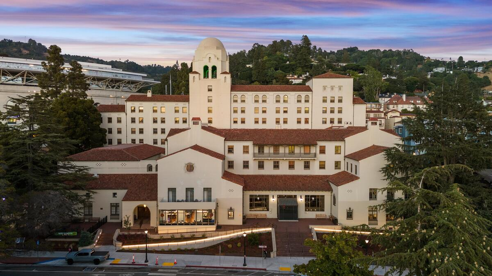

Hello! I am a PhD student and NSF Graduate Research Foundation Fellow in the Department of Astronomy & Astrophysics at the University of Chicago. Here, I am working with Professor Diana Powell on sub-Neptune atmospheres, with a particular focus on developing new models for aerosols in the atmospheres of these as-yet enigmatic planets. I also maintain broad and developing interests across planet formation and demographics.
Before moving to the tropical paradise that is Chicago, I spent some happy years at UC Berkeley, from where I obtained my undergraduate degree in physics & astrophysics in December 2023. I was especially fortunate to get to do research on topics spanning radio astronomy and exoplanet science with amazing mentors including Sarah Blunt, Josh Dillon, Konstantin Batygin, Brendan Bowler, Max Goldberg, and Soumavo Ghosh. My time as an undergraduate was considerably enriched by the wonderful community at the UC Berkeley International House, which I was lucky to call home.
